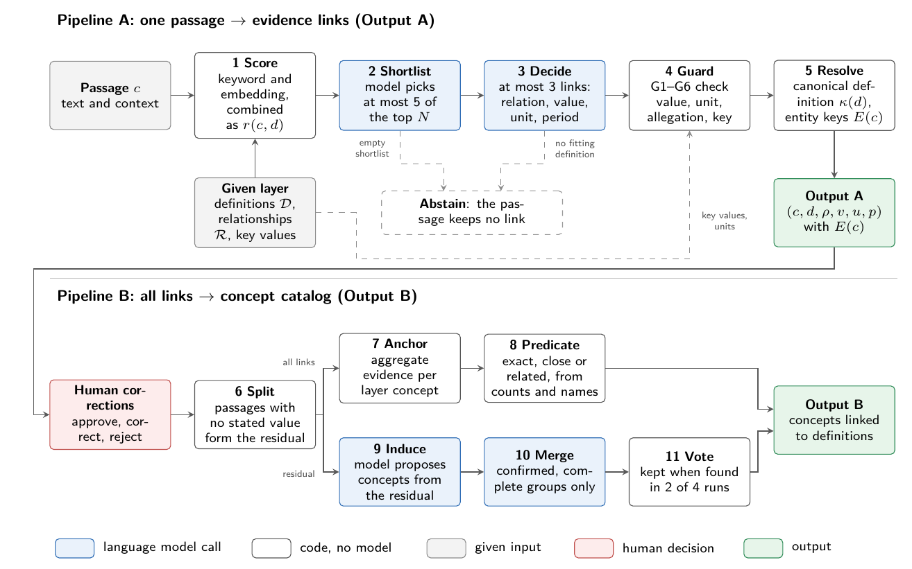

管线 A：证据链接¶
管线 A 把一个段落变成证据链接，或变成一次弃权。 模型在检索到的定义中做选择。 然后代码检查值、确定关系、解析规范定义并附加实体键。
输入： 可读来源的分块、语义模型、结构化数据（用于实体键）。 输出： 输出 A，每个分块一条或多条证据链接记录。

论文的图 2。蓝色步骤调用语言模型。白色步骤是代码。 候选清单为空或没有合适定义的段落不保留链接。
五个步骤¶
| 步骤 | 执行者 | 内容 |
|---|---|---|
| 1 打分 | 代码 | 为每个定义计算关键词得分和嵌入得分，并合并 |
| 2 候选清单 | 模型 | 从靠前的列表中最多选出五个定义 |
| 3 决策 | 模型 | 最多返回三条链接：定义、关系、值、单位、期间 |
| 4 防护 | 代码 | 防护规则 G1 至 G6 检查值、单位、指控和键 |
| 5 解析 | 代码 | 规范定义和实体键 |
1. 打分¶
查询是带上下文的段落。 每个定义有一张文本卡。
为每个定义计算两个得分。
- 嵌入。 段落与定义卡的余弦值，两者都来自
mistral-embed。 它被转换成整个目录上的标准分。 标准分消除了嵌入相似度中每个查询的偏移。 - 关键词。 基于标签、同义词和描述的关键词得分。
两者都被截断到 0 至 1 的范围。 关键词得分除以 45。 标准分把 2.0 映射为 0，把 4.5 映射为 1。 两者合并，使任一路的强证据都能计入：
常数 45、2.0 和 4.5 是在开发数据上设定的，没有进一步调优。
检索接近度不是置信度
r 是检索接近度。它不是置信度。
2. 候选清单¶
默认的候选方法是两步法。
| 设置 | 值 | 变量 |
|---|---|---|
| 目录大小不超过此值时，提供整个目录 | 150 | V2_WHOLE_CATALOG_MAX |
| 否则按检索得分排出的第一步列表大小 | 60 | V2_SHORTLIST_POOL |
| 候选清单大小 | 最多 5 | — |
| 加入候选清单的额外检索候选 | 0 | V2_SHORTLIST_EXTRA |
| 提示词 | shortlist-v2，然后是 interp-v3 |
第二个由 V2_INTERPRET_PROMPT 设置 |
模型读取一份紧凑列表：每个定义一行，含 id、标签和一行说明。 它最多返回五个 id。 答复中出现列表之外的 id 即为无效。不做任何替换。 空的候选清单是一次弃权，不进行第二次调用。
最初的设计是 hybrid-12：两路各取前 12 的并集。 在开发数据上，仅靠嵌入排序，正例段落中正确定义进入前 12 的比例只有 0.52（金融）和 0.69（制造）。 因此，短的单一列表限制了召回率。 这一结果促成了“宽的第一步列表加模型候选清单”的设计。
V2_CANDIDATE_VARIANT 选择另一种方法：lexical、vector、hybrid12、hybrid30、hybrid50、expanded 或 two_step。
3. 决策¶
决策模型是 mistral-small-latest，温度为 0，提示词为 interp-v3。
V2_INTERPRETER_MODEL 可覆盖该模型。
它读取段落、段落的上下文和候选清单中各定义的完整卡片。
它最多返回三条链接，也可以一条都不返回。
每条链接指向候选清单中一个不同的定义。
无效的项会被丢弃并记录。
如果每一项都无效，该分块被存为 degraded。
每个分块的调用默认运行在由四个工作线程组成的共享池上。
4. 防护规则¶
防护规则在模型之后运行。
| 防护规则 | 条件 | 效果 |
|---|---|---|
| G1 值落地 | 规范化后的值没有出现在规范化后的段落中 | 删除该值 |
| G2 指控 | 段落匹配指控模式，且关系是 states_value_of |
关系变为 is_about |
| G3 受约束字段 | 有指控措辞，且该定义是受约束字段 | 撤回该链接 |
| G4 单位冲突 | states_value_of，值有单位族，且定义的单位不在其中 |
关系变为 is_about |
| G5 无值 | 没有值的 states_value_of |
关系变为 is_about |
| G6 键值 | 规范定义是键列，且段落恰好包含它的一个已有值 | 值变为该键；关系变为 states_value_of |
在代码中，对任何负面媒体来源中的受约束字段，无论有没有指控措辞，G3 也会触发。
这些防护规则执行同一条规则。
states_value_of 需要为一个可识别的实体给出该定义的值。
承诺、目标、指控，或不同的单位、粒度或期间，最多只能是 is_about。
5. 解析¶
规范定义¶
由声明的关系连接的两个字段可以持有同一个键。 规范映射从非键的外键列追到它所引用的主键。 每条链接同时保存选中的定义和规范定义。 严格指标比较选中的定义。规范指标在两侧都比较规范定义。
实体键¶
实体键属于分块。
flowchart LR
T[分块文本和上下文] -->|标签规则| ST[陈述的键]
ST -->|声明的关系| DE[推导的键]
SRC[同一来源的其他分块] -->|某张表恰好一个键| IN[继承的键]
ST --> E[分块的实体键]
DE --> E
IN --> E- 字母数字混合的标识符在任何位置都可解析。
- 单独的数字只有紧跟从模型推导出的标签时才可解析：列名，或该表的实体词。
- 单独的名称不解析任何东西。
每个键都标记它是如何找到的：陈述、推导或继承。
存储的记录¶
每条链接包含：
- 分块、来源、来源修订版本和跨度；
- 定义和规范定义；
- 关系、陈述的值、单位、期间；
- 实体键；
- 候选及其得分（最多存储 50 个）；
- 方法和模型修订版本；
- 状态：
proposed、degraded、corrected、rejected或not_processed； - 操作者和时间。
链接存储在表 v2_evidence_links 中。
它们可以从 /api/evidence-links/export 导出为 JSON 行。
模型做什么，代码做什么¶
| 模型 | 代码 |
|---|---|
| 最多选出五个候选 id | 为每个定义打分 |
| 选出最多三个定义和一个关系 | 对照所提供的列表验证每个 id |
| 复制一个值、单位和期间 | 检查该值是否出现在段落中 |
| 按规则降级或撤回关系 | |
| 解析规范定义和实体键 |
结果简述¶
在留出的金标准集 A2（82 个锚点，运行一次）上，模型决策步骤的精确率达到 0.70。 阈值和规则达到 0.29。 在未见的合成数据包上，两步法的误链接率为 0.03（金融）和 0.01（制造）。 承诺是最弱的类别。 见评估。